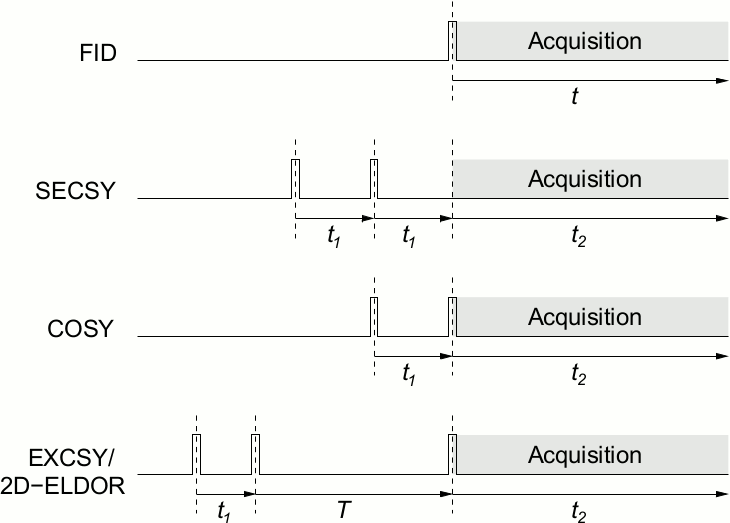

Experiments¶
Running Experiments¶
Most of the Python code to run this experiment is stored as a library. You run the code by running a script called hfesr. It initializes the cards in the computer, requests the username and magnet current, and defines several experiments that can be run. A sample session is:
$ hfesr
95 GHz Spectrometer Interface (C) 2003, 2004, 2005 Wulf Hofbauer
Searching for Acqiris digitizers ...
1 Acqiris card(s) found
PCI::INSTR0 (Serial #16900, PCI address 0.13) model 'AP240'
Initializing AP240 digitizer #16900 at PCI 0.13 ...
Using AP240, serial number #16900, for quadrature signal.
Initializing Timing module ...
Initializing EIP535 frequency counter at /dev/gpib0/dev3 ...
Initializing Stanford SR510 lock-in amplifier at /dev/ttyS0 ...
Initializing Stanford SR510 lock-in amplifier at /dev/ttyS1 ...
Initializing Lakeshore 331S temperature controller at /dev/gpib0/dev12 ...
>>> You are running as user 'acert'. <<<
Please enter the persistent magnet current [A]: 29.2
Thank you. A main coil current of 29.2 A will be assumed from now on.
This corresponds to a main field of 3.40005 T.
Spectrometer is s. Experiments are dqc128, deer4, and fid.
Print s or any experiment to see its variables.
help(s) or help(experiment) gives more information.
Run an experiment, such as FID, with fid.run().
95 GHz: print deer4
95 GHz: deer4.averages=1000
95 GHz: deer4.run()
Each experiment has the methods to show its settings, get help, run, plot, and print. If you start with an instance of the FID class, stored in the fid variable, you can find the parameters in that class with the print function. To see all documentation on FID, use help(fid).
95 GHz: print fid
FID
averages=32
plots=None
pulse_length=8e-09
rep_rate=5000
spectrometer=None
95 GHz: help(fid)
...all of its documentation is printed here...
All experiments can be run by calling run(). The plot() function calls the default plotting routine. There may be other routines, as in ELDOR, which has another routine to do a contour plot.
95 GHz: fid.run()
95 GHz: fid.plot()
95 GHz: fid.print_plot()
The last call prints the last set of plots you made. You have to make a plot before it can print one.
Tuning¶
Tuning is an experiment like any other, so it has run and print methods. As part of the Predefined Experiments (next), there are various tuning methods for different situations.
Predefined Experiments¶
The predefined Fourier Transform ESR experiments are implemented using a shared, generic acquisition routine that implements preflight checking before the actual data acquisition is started. Beginning and end of major steps in the process are indicated by messages to the logging facility. In the case of lengthy preflights or acquisitions, additiona messages are generated indicating progress.
Following are examples of pulse sequences for various Fourier Transform ESR experiments. Top to bottom: free induction decay (FID), spin echo correlation spectroscopy (SECSY), correlation spectroscopy (COSY), and exchange correlation spectroscopy / 2D electron-electron double resonance (2D-ELDOR/EXCSY).
Functions
OnePulsedAcquisition(spectrometer, ...[, addjmp]) |
This is just like PulsedAcquisition except that it sends all of the sequences and averages over all of them. |
PulsedAcquisition(spectrometer, sequences, ...) |
Acquires measurements like PulsedAcquistion, except that it crates a 3D array of numbers: [bins x] samples x pulses x phases. |
clearkey() |
|
handle_break(signum, frame) |
|
keypress() |
|
plot_data(pl, x, y[, scaling, zeropos, ...]) |
|
test_experiments() |
Running every experiment through a mock spectrometer. |
test_experiments_pulseblaster() |
Running every experiment through a mock spectrometer using the pulseblaster card. |
test_experiments_tune() |
Running Tune. |
test_set_base() |
Classes
B1_FID(**kwargs) |
This experiment is used for finding B1 using a single-pulse FID method. |
B1_echo(**kwargs) |
According to John, this is obsolete. |
B1_se(**kwargs) |
This is like B1_echo, but modified by john so the second pulse is twice the first, and so the second ends at “t = 0” |
COSY(**kwargs) |
The Correlation Spectroscopy (COSY) class implements a two-pulse correlation spectroscopy experiment. |
COSYAverages(**kwargs) |
The Correlation Spectroscopy (COSY) class implements a two-pulse correlation spectroscopy experiment. |
CW(**kwargs) |
Field-swept and field-modulated continuous wave ESR experiment. |
Constants |
|
DEER3(**kwargs) |
DEER 3 pulse experiment: pi/2 - t1 - pi/2 - T - pi/2 - t2 |
DEER4(**kwargs) |
4 pulse experiment: |
DQC(**kwargs) |
6 pulse experiment: pi/2 - tp - pi - tp - pi/2 - t1 - pi - t1 - pi/2 - (tm-tp) - pi - t2 |
DQC128(**kwargs) |
6 pulse experiment: pi/2 - tp - pi - tp - pi/2 - t1 - pi - t1 - pi/2 - (tm-tp) - pi - t2 |
DQC256(**kwargs) |
6 pulse experiment: pi/2 - tp - pi - tp - pi/2 - t1 - pi - t1 - pi/2 - (tm-tp) - pi - t2 |
DQC64(**kwargs) |
6 pulse experiment: pi/2 - tp - pi - tp - pi/2 - t1 - pi - t1 - pi/2 - (tm-tp) - pi - t2” |
DQCBase(**kwargs) |
6 pulse experiment: pi/2 - tp - pi - tp - pi/2 - t1 - pi - t1 - pi/2 - (tm-tp) - pi - t2 |
ELDOR(**kwargs) |
The Exchange Correlation Spectroscopy (2D-ELDOR/EXCSY) class implements a three-pulse exchange correlation spectroscopy / 2D electron-electron double resonance spectroscopy experiment. |
ELDOR_3D(**kwargs) |
The Exchange Correlation Spectroscopy (2D-ELDOR/EXCSY) class implements a three-pulse exchange correlation spectroscopy / 2D electron-electron double resonance spectroscopy experiment. |
Echo(**kwargs) |
The Spin Echo experiment measures T2. |
Experiment() |
Every experiment supports these functions. |
FID(**kwargs) |
Free induction decay experiment implements a one-pulse free induction decay experiment. |
FIDAverages(**kwargs) |
Free induction decay experiment implements a one-pulse free induction decay experiment. |
Loopback(**kwargs) |
Modeled after the FID experiment, this is designed to test whether the signal generator and averager are working correctly. |
PulseExperimentBase([field_sweep]) |
Base class for pulsed experiments, implements on and off-field measurements using sweep coil .. |
PulseTune(**kwargs) |
The Pulse Tune experiment measures T1. |
SECSY(**kwargs) |
Spin Echo Correlation Spectroscopy (SECSY). |
T1_inv(**kwargs) |
T1_inv recovery experiment. |
Tune(**kwargs) |
This resonator tuning aid generates a sequence of four pulses at 50, 100, 150, and 200 ns after the acquisition trigger with phases of 0, 90, 180, and 270 degrees, respectively, and renders a live display of the received quadrature signal on the screen. |
Tune2(**kwargs) |
This is an experiment that is like the FID experiment but used for tuning, so it runs until a key is pressed. |
Tune3(**kwargs) |
This is an experiment that is like the FID experiment but used for tuning, so it runs until a key is pressed. |
TuneCWConstant(**kwargs) |
This is an experiment that is like the FID experiment but used for tuning, so it runs until a key is pressed. |
TuneCWCycled(**kwargs) |
This is an experiment that is like the FID experiment but used for tuning, so it runs until a key is pressed. |
TuneCycled(**kwargs) |
Like the FID experiment, but used for tuning, so it runs until a key is pressed. |
TuneEcho(**kwargs) |
For tuning on signal. |
TuneEchoCycled(**kwargs) |
For tuning on signal. |
echo_T2(**kwargs) |
This is modified from B1_se to run a series of echoes with increases interpulse delay. |
split_inv_rec(**kwargs) |
This implements a split inversion recovery program – which is four pulses: |
DQC Phase Cycling¶
A whole module was developed for DQC phase cycling. However, JMF recommends staying away from this, since it introduces unnecessary complexity, so it was removed from the manual.
Designing New Experiments¶
New experiments can be designed by writing Python code, algorithmically
describing the various steps needed to perform the experiment using the
functionality provided by the Spectrometer and supporting modules.
For consistency, it is recommended to follow the general outline of the predefined experiments. Note also that these experiments attempt to gather and preserve a lot of acquisition parameters, easing bookkeeping tasks. In many cases, these bookkeeping tasks and error checking constitute the main part of the code.
For one-off experiments, however, it is perfectly possible to define a simple Python function, hard-coding experimental parameters, etc. To illustrate this, here is a minimalist (but fully phase-cycled) field-swept echo experiment, spelled out step by step:
def fse(s):
import Numeric; # for handling arrays
import PhaseCycling; # for creating phasecycles
import time; # for time delays
rep_rate=5000;
averages=128;
# timing in nanoseconds
pulse_length=8;
pulse_separation=200;
# define the sweep range
B_min=3.39;
B_max=3.4;
B_steps=512;
# calculate individual magnetic fields and
# required sweep coil currents
fields=Numeric.arange(B_min, B_max, (B_max-B_min)/B_steps);
sweep_currents=(fields-s.get_main_field())/s.sweep_tesla_per_ampere;
# use a full CYCLOPS phase cycle
phasecycle=PhaseCycling.FullPhaseCycle(2);
# create an empty array to hold the data
data=Numeric.zeros((len(phasecycle), len(fields),
s.get_record_length()), Numeric.Complex);
# loop over all desired fields
for i in range(len(sweep_currents)):
# set the sweep coil current
s.set_sweep_current(sweep_currents[i]);
# let the field settle for a bit
time.sleep(0.2);
# loop over all phase combinations
for j in range(len(phasecycle)):
phases=phasecycle[j];
# define pulse sequence
ps=[(-pulse_separation-pulse_length/2,
pulse_length, phases[0]),
(-pulse_length/2, pulse_length,
phases[1])];
# compile sequence to a program
pp=s.compile_pulse_program(ps, averages,
rep_rate);
# start averager and run the pulse program
s.start_averager(averages);
s.run_pulse_program(pp);
# wait until the averager is done
while s.averager_busy(): time.sleep(0.01);
# read out averager
data[j,i]=s.read_averager();
return data;
To run the experiment, the function would be called with the
Spectrometer module as its argument. On completion, the function
returns a 3D data array, where the first index represents the step in the
phasecycle, the second the magnetic field, and the third the time axis.
Such code might be written on the fly using a text editor, and the function
declaration loaded using the Python execfile function.
A simple, non-phasecycled FID experiment might even be conducted completely from the command line:
95 GHz: s=Spectrometer
95 GHz: ps=[(-4, 8, 0)] # a single pulse
95 GHz: pp=s.compile_pulse_program(ps, 4096, 5000)
95 GHz: s.start_averager(4096)
95 GHz: pp.run()
95 GHz: s.averager_busy() # check if acquisition done
1
95 GHz: s.averager_busy()
0
95 GHz: data=s.read_averager()